[ 05 / 14 ] · Bar Club · Lisboa
Social B
Direção de conceito e design de atmosfera para um bar e clube numa cave abobadada histórica no centro de Lisboa.
Serviços · 4/4 · 100%
- AConceito & Posicionamento
- BComida, Bebida & Experiência
- CEspaço, Configuração & Operações
- DEquipa, Lançamento & Consultoria


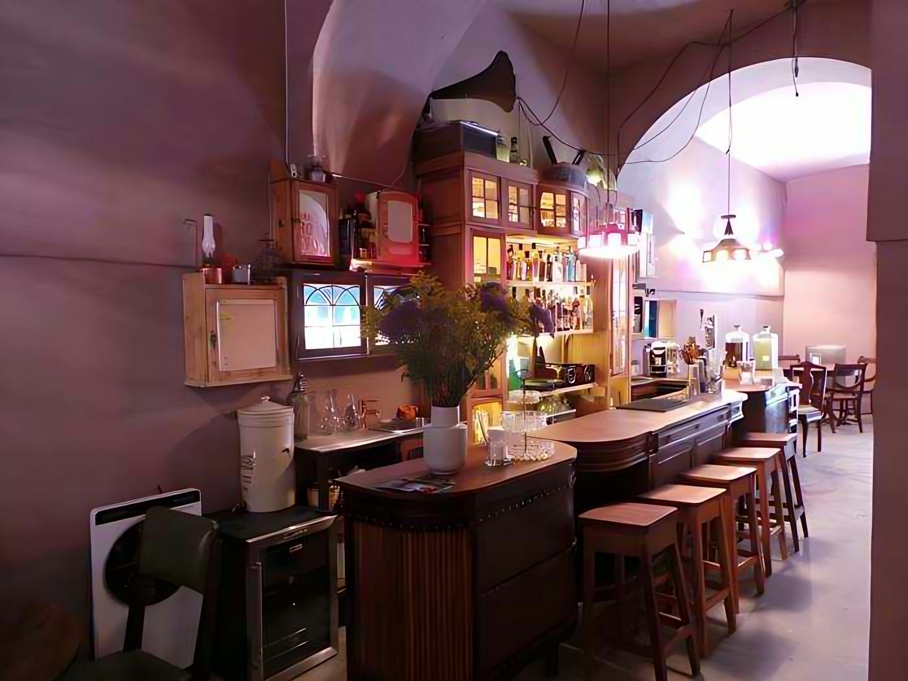
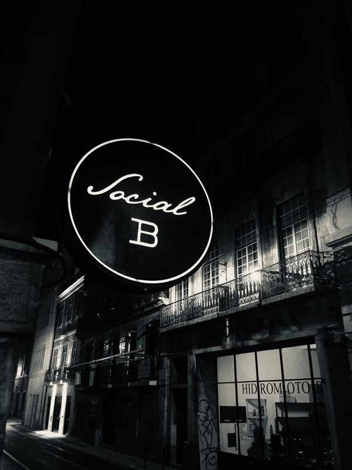
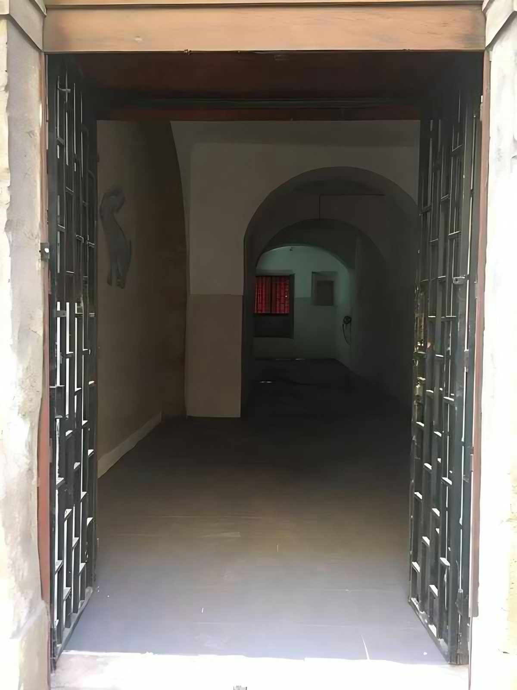
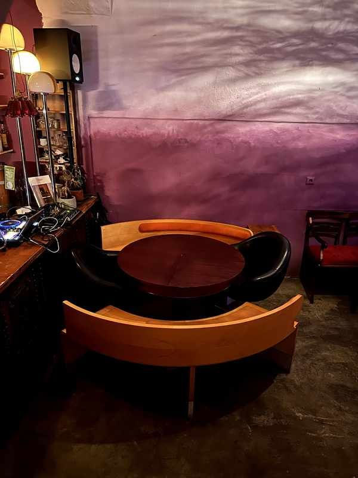
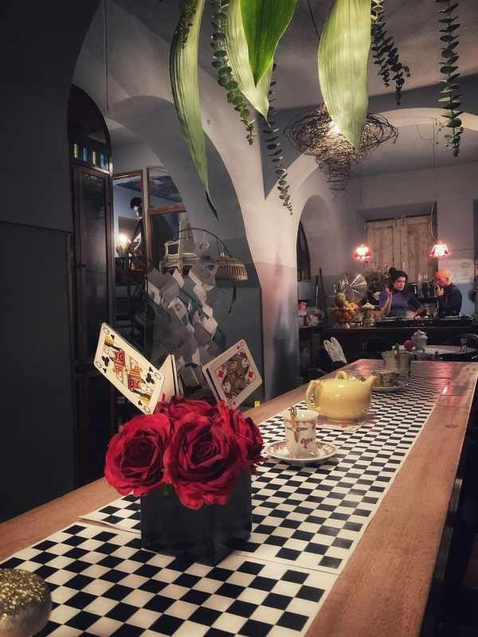
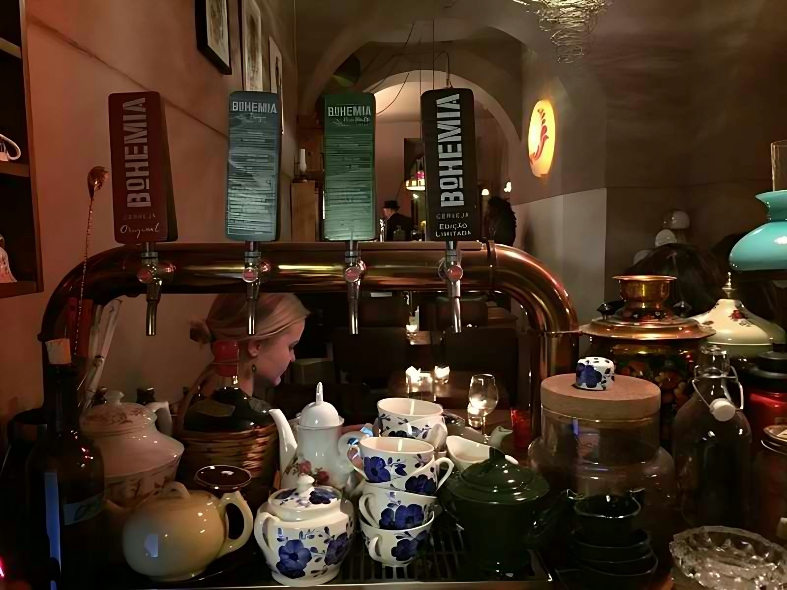
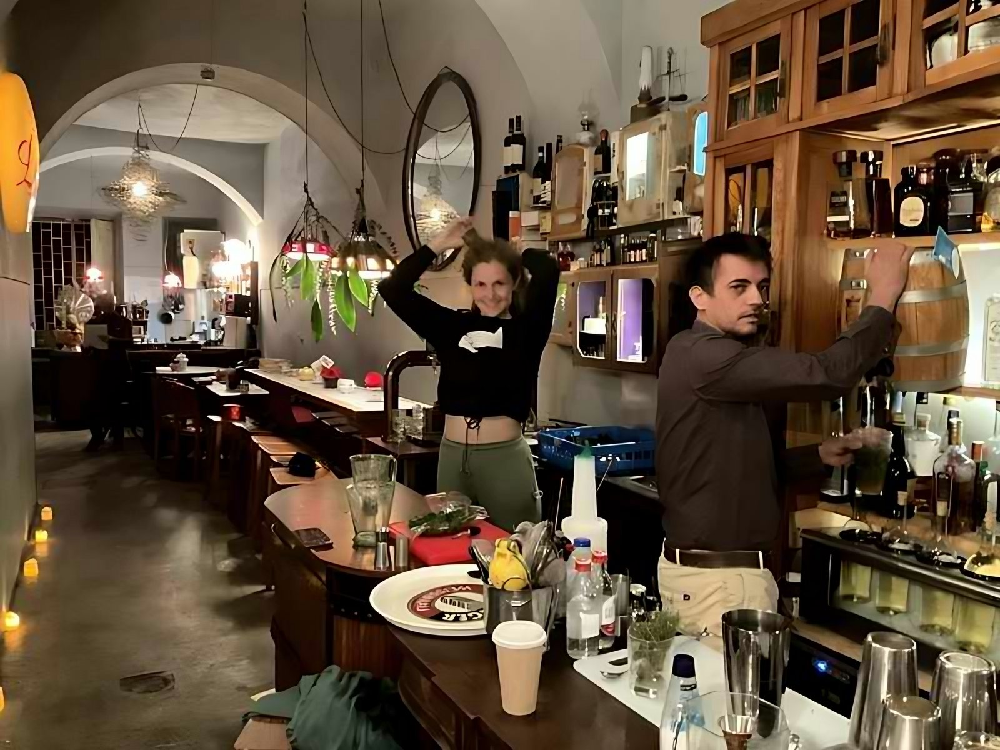
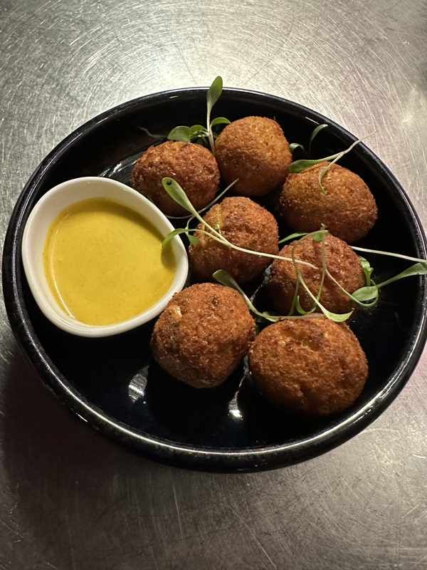
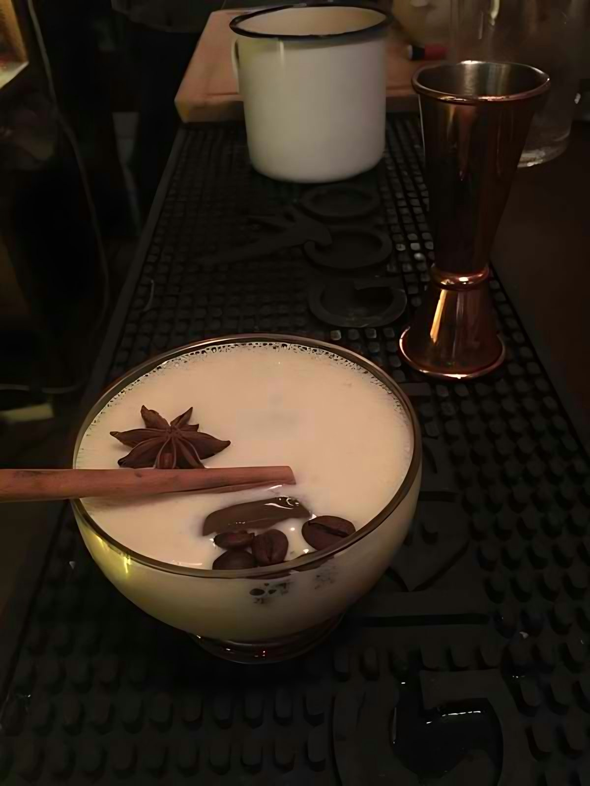
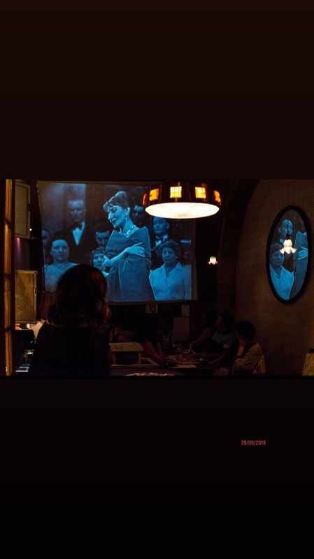
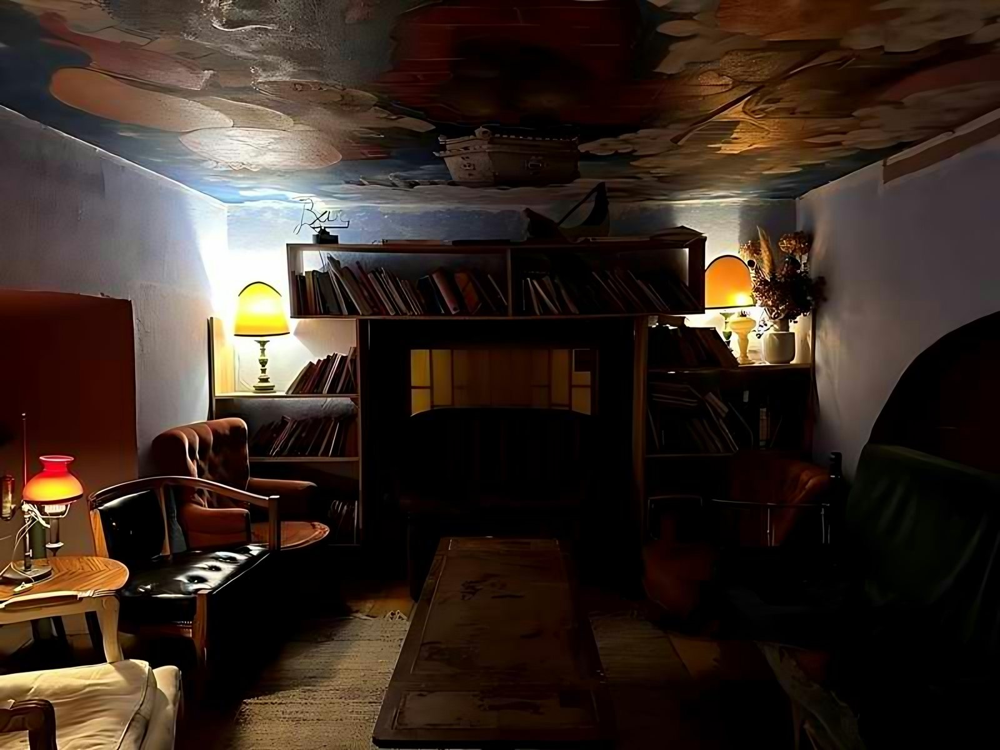
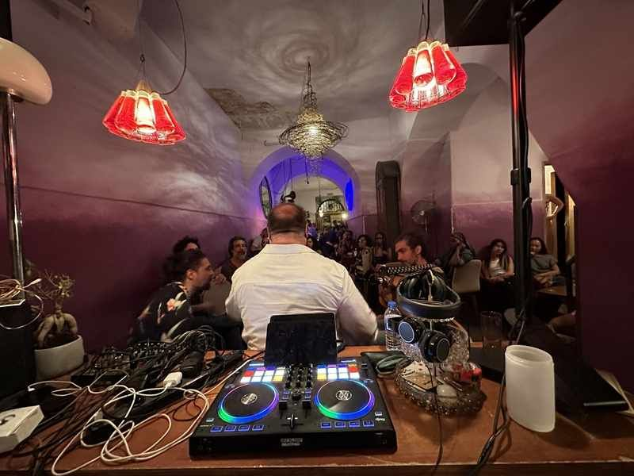
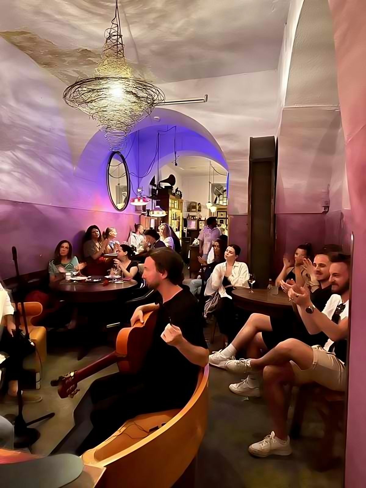
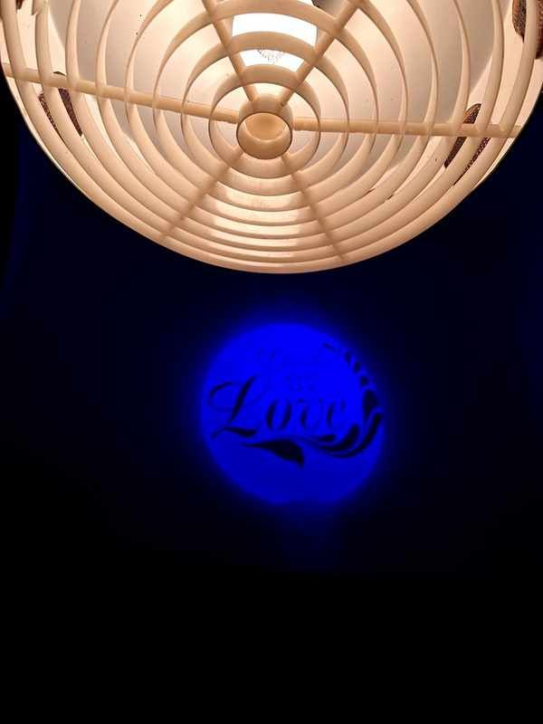